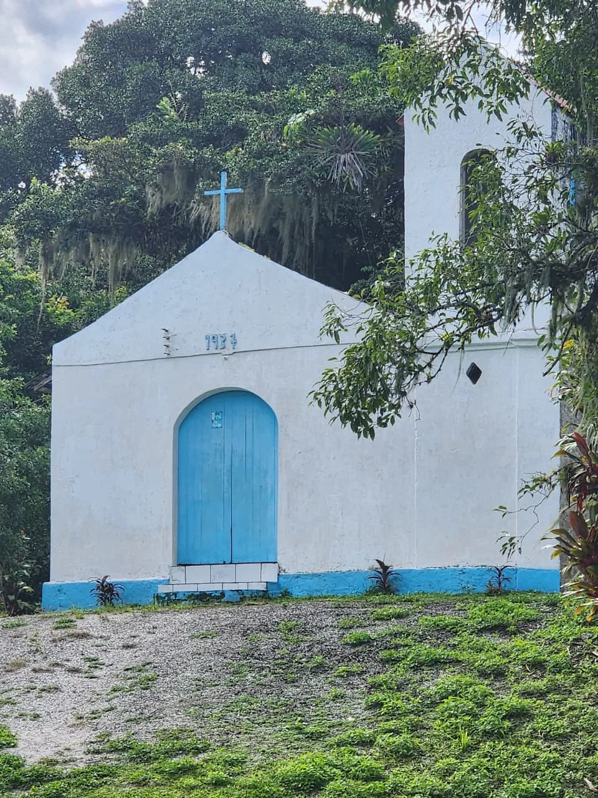
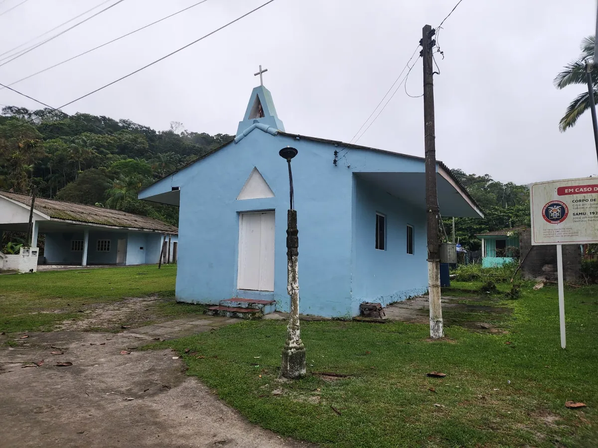

À primeira vista, uma igreja pode parecer apenas uma construção da vida religiosa da vila. Em Piaçaguera, porém, existe uma história mais profunda sob esse lugar: documentos institucionais registram que a igreja foi construída sobre um sambaqui, um sítio arqueológico que remete a presenças humanas muito anteriores à comunidade atual.
Essa aproximação de tempos é o que torna o conjunto tão curioso. A igreja e o sambaqui não contam a mesma história, mas dividem parte da paisagem. Para entender o que sabemos — e o que ainda é uma pergunta — é preciso olhar as fontes de perto.

Uma igreja, um sambaqui e muitas camadas de história
A existência desse conjunto é bem documentada. A cartilha socioambiental da Portos do Paraná registra que a Vila de Piaçaguera possui uma igreja construída sobre um sambaqui e associa ao local a conhecida lenda da noiva. A Secretaria Municipal de Cultura e Turismo de Paranaguá também destaca, entre os atrativos da comunidade, a igreja antiga e o sambaqui. Em 2025, reportagem divulgada pela Prefeitura voltou a registrar a visita à “igrejinha” localizada sobre o sítio conchífero.[1][2][3]
O conjunto possui grande valor educativo porque permite discutir, no mesmo espaço, diferentes temporalidades do território: ocupações humanas anteriores à colonização europeia, formação histórica das comunidades costeiras e religiosidade católica presente na vida caiçara.
Qual é o nome da capela? A resposta ainda pede documentos
As fontes oficiais de turismo e os documentos socioambientais consultados utilizam principalmente expressões como “igreja antiga”, “igreja católica” ou “igreja construída sobre um sambaqui”, sem informar a invocação canônica do templo.[1][2]
Uma obra memorialística publicada pelo Instituto Histórico e Geográfico de Paranaguá em 1999 lista a Capela de Piaçaguera entre as capelas vinculadas à paróquia de Nossa Senhora do Santíssimo Rosário e registra como padroeiro o Senhor Bom Jesus.[4] Como essa informação entra em conflito com a denominação “Nossa Senhora da Conceição” encontrada em algumas bases cartográficas secundárias, a forma mais responsável para o site, enquanto não houver confirmação paroquial ou diocesana, é utilizar Igreja Católica de Piaçaguera ou Capela de Piaçaguera.
1937: a data que precisa ser confirmada
Não foi localizada, nas fontes públicas consultadas para esta revisão, documentação primária que confirme que a atual igreja de alvenaria tenha sido construída em 1937. Também não foi encontrada comprovação documental suficiente para atribuir a obra a um grupo específico de moradores, a determinado sacerdote ou a uma ação formal da Diocese.
A participação comunitária na manutenção e no uso religioso do espaço é coerente com a dinâmica das comunidades caiçaras, mas a autoria da construção e suas possíveis reformas devem ser investigadas por meio de livros de tombo, arquivos paroquiais, documentos diocesanos, fotografias antigas, registros municipais e memória oral dos moradores.
O que os sambaquis podem nos contar?
Sambaquis são sítios arqueológicos formados pela ação humana ao longo de extensos períodos, frequentemente compostos por conchas, restos de fauna, sedimentos, materiais líticos e outros vestígios. Alguns apresentam sepultamentos e estruturas relacionadas a práticas sociais e rituais. A legislação brasileira os reconhece expressamente como monumentos arqueológicos ou pré-históricos.[5]
No caso de Piaçaguera, Paranaguá, as fontes locais confirmam a presença do sambaqui sob a igreja, mas ainda não foi localizado nesta revisão um registro público inequívoco que permita informar com segurança código no CNSA/SICG, área exata do sítio, escavações realizadas, estratigrafia, datação por carbono-14 ou classificação como sítio multicomponente. Esses dados precisam vir de documentação arqueológica específica do sítio paranaense.
Por que esse patrimônio é protegido?
A Lei nº 3.924/1961 determina a proteção dos monumentos arqueológicos e pré-históricos e inclui expressamente os sambaquis. A Constituição Federal também reconhece os sítios arqueológicos como bens da União. Pesquisas, escavações e intervenções arqueológicas dependem das regras e autorizações do Iphan.[5][6]
No âmbito territorial, documentos recentes do Município de Paranaguá e do licenciamento dos trapiches situam Piaçaguera dentro da APA Federal de Guaraqueçaba e em Zona de Uso Sustentável. Assim, para este conteúdo, essa é a denominação ambiental adequada, em vez de “APA da Baía de Paranaguá”.[7]


Dragagem e sedimentos: o que dizem os estudos
Dragagens podem provocar ressuspensão de sedimentos, aumento temporário de turbidez e alterações no fundo, razão pela qual o licenciamento do Porto de Paranaguá prevê monitoramentos ambientais. Em campanhas realizadas no complexo portuário, foram acompanhados parâmetros como qualidade da água, sedimentos, turbidez, biota aquática, atividade pesqueira e dispersão da pluma de sedimentos.[8]
Isso não significa que toda redução de pescado, mudança de corrente, erosão ou alteração ecológica observada pela comunidade possa ser automaticamente atribuída à dragagem. A própria documentação de monitoramento distingue impactos potenciais, percepções dos pescadores e resultados que precisam ser avaliados tecnicamente.
Estudo científico publicado em 2021 acompanhou, antes, durante e depois da dragagem de aprofundamento do Canal da Galheta, praias de Amparo, Piaçaguera, Maciel e Encantadas. Entre os pontos monitorados, a erosão continuada foi identificada nos setores mais a leste de Amparo e Maciel; os autores relacionam esses processos a uma combinação de correntes de maré, baixa altitude da praia, marés meteorológicas e possível influência da intervenção de dragagem. O estudo não apresentou Piaçaguera como um dos pontos de erosão continuada atribuídos à obra.[9]
A maré avança — mas por quê?
O Plano Municipal de Redução de Riscos de Paranaguá, com avaliação de campo realizada em 2024, registra em Piaçaguera evidências de erosão costeira, diminuição da faixa de areia e relatos de avanço da maré. O documento também registra medidas improvisadas de contenção adotadas por moradores, como pneus, madeira e sacos de areia.[7]
Esse registro confirma a existência atual do problema de erosão, mas não estabelece que a dragagem seja sua causa exclusiva ou direta. Qualquer relação causal com aprofundamento de canais, ondas de embarcações, marés meteorológicas, alterações sedimentares ou outras intervenções exige análise hidrodinâmica e morfodinâmica específica.
Quando o movimento dos navios encontra as redes
Em vistoria do Ibama realizada em 2014, foram registrados relatos de que ondas geradas por navios próximos a Piaçaguera, Cotinga e Ponta Oeste haviam provocado danos a redes e perdas de pescado. O documento informa que a empresa responsável verificaria os prejuízos relatados pelos pescadores. Esse registro é importante porque documenta um conflito concreto entre a atividade portuária e a pesca artesanal, mas não deve ser ampliado para afirmar que todas as perdas de equipamentos sejam causadas especificamente por embarcações de dragagem.[10]
O que existe para acompanhar e compensar os impactos
A dragagem de aprofundamento dos Portos de Paranaguá e Antonina foi licenciada pelo Ibama. Entre as condicionantes e programas ambientais estão ações de gestão da dragagem, comunicação social, monitoramento da biota aquática e da qualidade das águas, arqueologia submarina e compensação da atividade pesqueira.[11]
O Programa de Compensação da Atividade Pesqueira, associado à Licença de Instalação nº 1144/2016, incluiu a reforma de trapiches em várias comunidades, entre elas Piaçaguera. O Instituto Água e Terra (IAT) participou do licenciamento ambiental das obras dos trapiches; portanto, não é correto apresentá-lo como órgão federal co-responsável pelo licenciamento principal da dragagem portuária.[12][13]
O patrimônio faz parte de uma história maior
O sambaqui e a igreja fazem parte de temporalidades diferentes do mesmo território. Para compreender a ocupação pré-colonial do litoral, os povos indígenas registrados no período colonial, a formação de Paranaguá e das comunidades costeiras, consulte a página História de Piaçaguera. Esta página evita repetir toda a cronologia e concentra-se no conjunto patrimonial da igreja e do sambaqui.
Para informações sobre a comunidade atual, trapiche, escola, turismo de base comunitária e trilhas, consulte também Piaçaguera — comunidade e pontos de interesse.
E em Amparo? Lugares próximos, histórias diferentes

Piaçaguera e Amparo compartilham a baía, a pesca artesanal e os caminhos entre comunidades. Mas cada uma guarda suas próprias marcas de memória e patrimônio.
Em Piaçaguera, os materiais institucionais registram a igreja erguida sobre um sambaqui. Em Amparo, registros acadêmicos mencionam uma igreja católica e um sambaqui em pontos distintos do território. Por isso, não é correto repetir automaticamente que a igreja de Amparo também foi construída sobre o sítio.
A relação entre as duas comunidades convida a pesquisar suas festas, capelas, caminhos, memórias orais e vestígios arqueológicos, sempre distinguindo documentos de hipóteses. A fotografia enviada ao EntreMarés permite apresentar a igreja de Amparo, sem confundir o local do templo com o sítio arqueológico mencionado nos estudos.
Leia a reportagem de AmparoPreservar também é saber perguntar
Entre a fé, os vestígios arqueológicos e as transformações da baía, Piaçaguera guarda um patrimônio que merece ser conhecido sem exageros. As novas fotografias comunitárias aproximam o leitor dessas construções, enquanto documentos patrimoniais e relatos autorizados poderão esclarecer detalhes ainda em pesquisa.
O que ainda precisa ser pesquisado
- confirmar, em fonte paroquial ou diocesana, a invocação oficial da capela e o santo padroeiro atualmente reconhecido;
- localizar documento primário sobre a data de construção da edificação atual e suas reformas;
- identificar eventual código do sítio no CNSA/SICG e seu perímetro arqueológico;
- localizar relatórios arqueológicos específicos do sambaqui de Piaçaguera, Paranaguá, incluindo eventuais datações e materiais associados;
- registrar, com autorização, memórias de moradores sobre a igreja, a lenda da noiva, festas religiosas e intervenções comunitárias no prédio;
- acompanhar estudos locais sobre erosão, marés, ondas de embarcações e transformações da linha de costa.
Notas de apuração
Esta reportagem preserva as informações e referências da pesquisa original. As fotografias das igrejas de Piaçaguera e Amparo foram enviadas diretamente ao EntreMarés e identificadas pela equipe do projeto; a autoria ainda não foi informada. A cartilha da Portos do Paraná (2021) permanece citada como fonte documental para a relação entre a igreja e o sambaqui em Piaçaguera. As imagens arqueológicas são referenciadas à exposição Entre Conchas do MAE-UFPR e aos respectivos acervos; o registro de Amparo possui licença Creative Commons indicada. Datas e achados do Guaraguaçu não são atribuídos ao sambaqui de Piaçaguera. Não foi estabelecida licença aberta para as imagens dos acervos museológicos.
Fontes e referências
- PORTOS DO PARANÁ. O Retrato das Comunidades da Baía de Paranaguá. Cartilha socioambiental, 2021. Consultar documento.
- PARANAGUÁ. Secretaria Municipal de Cultura e Turismo. Outras ilhas e comunidades caiçaras: Piaçaguera. Consultar fonte.
- PARANAGUÁ. Prefeitura Municipal. Programa Estúdio C visita Paranaguá, 8 fev. 2025. Consultar notícia.
- FREITAS, Waldomiro Ferreira de. História de Paranaguá: das origens à atualidade. Paranaguá: Instituto Histórico e Geográfico de Paranaguá, 1999. Registro bibliográfico disponível na Open Library. A informação sobre a Capela de Piaçaguera foi conferida em reprodução digital da obra.
- BRASIL. Lei nº 3.924, de 26 de julho de 1961. Dispõe sobre monumentos arqueológicos e pré-históricos. Consultar lei.
- IPHAN. Legislação do patrimônio arqueológico. Consultar página.
- BRASIL. Ministério das Cidades; PARANAGUÁ. Plano Municipal de Redução de Riscos — Sistema Valadares e Comunidades Caiçaras. Levantamento de 2024. Consultar relatório.
- PORTOS DO PARANÁ. Comunidade pesqueira recebe informações sobre a dragagem nos portos do PR, 26 nov. 2013. Consultar fonte.
- OLIVEIRA FILHO, Silvio Roberto et al. Morfodinâmica de praias estuarinas de baixa energia durante dragagem de aprofundamento do canal da Galheta, Paranaguá – PR. Revista Brasileira de Geografia Física, v. 14, n. 4, p. 1924–1940, 2021. Consultar artigo.
- IBAMA. Relatório de vistoria e reuniões com comunidades da área de influência do Porto de Paranaguá, 2014. Documento registra relatos de pescadores sobre ondas de navios, redes e perdas de pescado nas proximidades de Piaçaguera, Cotinga e Ponta Oeste.
- PORTOS DO PARANÁ. Porto de Paranaguá recebe licença ambiental para dragagem de aprofundamento, 10 jan. 2017. Consultar fonte.
- PORTOS DO PARANÁ. Programa de Compensação da Atividade Pesqueira. Consultar programa.
- INSTITUTO ÁGUA E TERRA. IAT emite licenças para construção de seis novos trapiches em Paranaguá, 8 mar. 2023. Consultar notícia.
- PARANÁ. Agência Estadual de Notícias. Litoral ganha roteiro turístico, cultural e ecológico em comunidades tradicionais, 29 maio 2025. Fotografia da igreja: Viaje Paraná. Consultar a fotografia no portal do Governo do Paraná.
- MAE-UFPR. Exposição virtual Entre Conchas. Registro fotográfico do sambaqui do Guaraguaçu I por Vladimir Kozák (1958), Acervo Museu Paranaense, e concha do Guaraguaçu A fotografada por Douglas Fróis. Consultar a exposição.
- PARANÁ. Coordenação do Patrimônio Cultural. Sambaquis A e B do Guaraguaçu — Pontal do Paraná. Consultar cadastro do patrimônio.